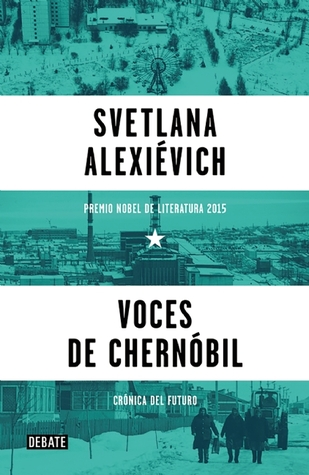

Voces de Chernóbil: Crónica del futuro (Voces de utopía, #4)
Reseña por Jorge I. Zuluaga

Ver reseña en GoodReads (necesita cuenta)
De la misma manera que nuestra especie es capaz de crear un número infinito de historias e historias sobre esas mismas historias, así mismo las emociones humanas son capaces de crear universos de dolor inimaginable, incluso partiendo de unos cuantos elementos o pequeños dramas. Esa capacidad "recursiva" de los relatos humanos deja al Universo físico como un enano.
Por extraño que parezca, esta es la reflexión que termine haciendo después de la lectura de los tristes monólogos de "Voces de Chernóbil", un libro sobre la dimensión humana de la que es considerado por muchos la catástrofe tecnológica más importante de la historia.
Como físico he leído y pensado en el desastre de Chernóbil desde la perspectiva de la ciencia y el evento como un fenómeno natural.
Los números han demostrado, con los datos disponibles (que no son todos los que podrían haberse recopilado) y 30 años después del desastre, que las verdaderas dimensiones físicas y ambientales del desastre no fueron tan alarmantes como creemos.
Aunque cueste creerlo, y todavía se mire a algunos científicos con desdén cuando defienden la que parece ser la posición del gobierno comunista de la época, el número de decesos producidos *directamente* por el desastre no supera las decenas de miles (cada año muere más 1 millón por la explotación de la energía de los combustibles fósiles), hoy el espacio alrededor del reactor esta protegido por una coraza de acero resistente a la radiación con una vida estimada de 200 años y la denominada zona de exclusión alcanzará, en unos años, niveles de radiación comparables con los de otros lugares del planeta (en lugar de ser inhabitable por decenas de miles de año como se llego a decir en su momento).
Aún así, nada de esto minimiza la dimensión inmensa del drama humano producido por Chernóbil, y esto es justamente lo que transmite el libro de Svetlana Alexievich.
Yo fui un testigo lejano del desastre. Tenía casi 11 años cuando ocurrió y vivía en Colombia, a medio mundo de distancia. Recuerdo preguntarle a mi mamá si la nube radioactiva pasaría por encima de nosotros, tal y como contaban las noticias de la época. Es posible que cuando llegaron a Colombia esas noticias, ya la temida nube habría esparcido algunos isótopos de estroncio y cesio en nuestro paraíso terrenal, sin que siquiera lo notáramos (como si los midieron una docena de países alrededor del globo.)
Mi angustia infantil, sin embargo, es vergonzosa, frente a los dramas humanos que vivieron los desplazados, los "liquidadores", los científicos y técnicos involucrados y todos los familiares de los "seres humanos de Chernóbil".
Es imposible, después de leer los testimonios en este libro, no sentir una profunda tristeza por las vidas perdidas, aquellas que no se apagan todavía pero que fueron destruidas por los traumas o la invalidez e incluso por aquellas que nunca llegaron a ser (se calcula que ha habido más de 200.000 abortos después del desastre).
Como lo dicen muchos de los sobrevivientes, es posible que debamos admitir que nuestra especie fue una antes de Chernóbil y otra distinta después del desastre. E insisto, esto es verdad, no por razones tecnológicas o científicas (han ocurrido otros desastres nucleares, estallaron dos bombas sobre ciudades japonesas y hay muchas otras amenazas tan o más peligrosas). Pero es cierto, como sugieren algunos testimonios en el libro, que la psiquis humana (al menos la de los habitantes de Belarus o de Ucrania) cambio después de aquel evento.
Como todos los libros, hay pasajes prescindibles, historias sin mucha relevancia (¡perdonen el pragmatismo!) El lector impaciente posiblemente abandone la lectura al juzgar todo el libro por un monólogo relativamente irrelevante. Es por eso que le recomiendo (como lo hago en la mayoría de mis reseñas) que si no tiene mucha paciencia o quiere extraer del libro lo "mejor" (aunque esto es muy subjetivo) no deje de leer los siguientes monólogos:
- Una solitaria voz humana (primer monólogo).
- Hace mucho que bajamos del árbol y no inventamos nada...
- La añoranza de un papel y un argumento.
- El ruso siempre quiere creer en algo.
- El poder ilimitado de unos hombres sobre otros.
- Coro de niños.
- Una solitaria voz humana (último monólogo).
Una última anotación: después de leer este libro me doy realmente cuenta de cuan injusto es que los productores de la exitosísima serie "Chernobyl" de HBO no hayan dado el crédito debido a Svetlana Alexievich. Muchas ideas e historias claves de la serie, fueron claramente inspiradas en este libro
Si leen el libro y ven la serie se darán cuenta de que quedo faltando un "basado en algunas de las historias recogidas en Voces de Chernóbil."